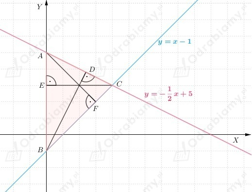
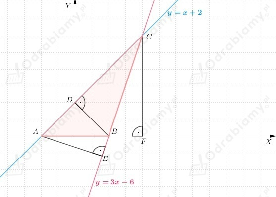

Aby trójkąt ABC był równoramienny, to długości dwóch jego boków muszą być takie same.
Zatem obliczmy długości wszystkich boków trójkąta ABC, aby sprawdzić czy ten trójkąt jest równoramienny.
Następnie mając długości wszystkich boków trójkąta ABC możemy
skorzystać z twierdzenia odwrotnego do twierdzenia Pitagorasa i sprawdzić, czy dany
trójkąt jest prostokątny.
a)
Obliczmy długości wszystkich boków trójkąta ABC.
Zauważmy, że |BC|=|AC|, zatem trójkąt ABC jest trójkątem równoramiennym.
Korzystając z twierdzenia odwrotnego do twierdzenia Pitagorasa dostajemy
więc trójkąt ABC jest trójkątem prostokątnym.
b)
Obliczmy długości wszystkich boków trójkąta ABC.
Zauważmy, że |BC|=|AC|, zatem trójkąt ABC jest trójkątem równoramiennym.
Zauważmy, że trójkąt ABC nie ma najdłuższej miary boku, zatem trójkąt ABC nie jest trójkątem prostokątnym.
c)
Obliczmy długości wszystkich boków trójkąta ABC.
Zauważmy, że żaden z boków trójkąta ABC nie ma równej miary, zatem trójkąt ABC nie jest trójkątem równoramiennym.
Korzystając z twierdzenia odwrotnego do twierdzenia Pitagorasa dostajemy
więc trójkąt ABC nie jest trójkątem prostokątnym.
d)
Obliczmy długości wszystkich boków trójkąta ABC.
Zauważmy, że żaden z boków trójkąta ABC nie ma równej miary, zatem trójkąt ABC nie jest trójkątem równoramiennym.
Korzystając z twierdzenia odwrotnego do twierdzenia Pitagorasa dostajemy
więc trójkąt ABC jest trójkątem prostokątnym.
Do obliczenia obwodu czworokąta KLMN potrzebujemy znać długości jego boków.
Zauważmy, że |KL|=1, |KN|=5, N(-4, 3), M(0, 2), L(-3, -2).
Zatem korzystając ze wzoru na długość odcinka dostajemy
Teraz możemy obliczyć obwód czworokąta KLMN
Do obliczenia obwodu czworokąta PQRS potrzebujemy znać długości jego boków.
Zauważmy, że |RS|=4, P(-1, -1), Q(4, -2), R(2, -1), S(2, 3).
Zatem korzystając ze wzoru na długość odcinka dostajemy
Teraz możemy obliczyć obwód czworokąta PQRS
Zauważmy, że
Zatem wnioskujemy, że
Odp: Obwód czworokąta PQRS jest większy od obwodu czworokąta KLMN.
Należy sprawdzić, który z odcinków AB i CD jest dłuższy.
Zatem obliczmy długości odcinków AB i CD korzystając ze wzoru na długość odcinka, a następnie sprawdzimy, który z nich jest dłuższy.
a)
Wiemy, że
Zatem
Wnioskujemy, że
b)
Wiemy, że
Zatem
Wnioskujemy, że
c)
Wiemy, że
Zatem
Wnioskujemy, że
Aby sprawdzić, czy trójkąt ABC jest prostokątny obliczymy długości wszystkich boków trójkąta ABC, a następnie
skorzystamy z twierdzenia odwrotnego do twierdzenia Pitagorasa.
a)
Wiemy, że
zatem
Zauważmy, że
Na mocy twierdzenia odwrotnego do twierdzenia Pitagorasa wnioskujemy, że trójkąt ABC jest trójkątem prostokątnym.
b)
Wiemy, że
zatem
Zauważmy, że
Na podstawie twierdzenia odwrotnego do twierdzenia Pitagorasa wnioskujemy, że trójkąt ABC nie jest trójkątem prostokątnym.
Wyznaczmy długości wszystkich boków trójkąta ABC i trójkąta DEF, aby móc stwierdzić czy są one względem siebie podobne czy przystające (identyczne).
a)
Wiemy, że
Zauważamy, że
zatem trójkąty ABC i DEF są przystające.
b)
Wiemy, że
Zauważmy, że
zatem trójkąty ABC i DEF są podobne.
c)
Wiemy, że
Zauważmy, że
zatem trójkąty ABC i DEF są podobne.
a)
Z treści zadania wiemy, że jeden z wierzchołków trójkąta jest punktem przecięcia prostych
Natomiast dwa pozostałe wierzchołki trójkąta, to punkty przecięcia tych prostych z osią OY.
Wyznaczmy współrzędne wierzchołka, który jest punktem przecięcia prostych.
Należy rozwiązać układ równań.
zatem
Oznaczmy ten wierzchołek przez C, więc
Wyznaczmy punkt przecięcia prostej y=x-1 z osią OY (x=0)
Wyznaczmy punkt przecięcia prostej y=-1/2x+5 z osią OY (x=0)
Przedstawmy rozważania na rysunku pomocniczym i przyjmijmy oznaczenia jak na rysunku poniżej

Zauważmy, że |EC|=4 (jest to jedna z wysokości trójkąta ABC), |EB|=4, |AE|=2.
Aby obliczyć obwód trójkąta potrzebujemy znać długości boków trójkąta ABC, zatem korzystając z twierdzenia Pitagorasa
Wiemy, że |AB|=6, zatem
Znamy już długość wysokości EC, a więc obliczmy długość wysokości BD i AF.
Wyznaczmy równanie prostej BD.
Wiemy, że prosta BD jest prostopadła do prostej AC, zatem
Prosta BD przechodzi przez punkt B(0, -1), więc
Więc prosta BD ma równanie postaci
Wyznaczmy współrzędne punktu D (jest to punkt przecięcia prostej BD z prostą AC), zatem rozwiążmy układ równań
zatem
Wyznaczmy równanie prostej AF.
Wiemy, że prosta AF jest prostopadła do prostej BC, zatem
Prosta AF przechodzi przez punkt A(0, 5), więc
Więc prosta AF ma równanie postaci
Wyznaczmy współrzędne punktu F (jest to punkt przecięcia prostej AF z prostą BC), zatem rozwiążmy układ równań
zatem
b)
Z treści zadania wiemy, że jeden z wierzchołków trójkąta jest punktem przecięcia prostych
Natomiast dwa pozostałe wierzchołki trójkąta, to punkty przecięcia tych prostych z osią OX.
Wyznaczmy współrzędne wierzchołka, który jest punktem przecięcia prostych.
Należy rozwiązać układ równań.
zatem
Oznaczmy ten wierzchołek przez A, więc
Wyznaczmy punkt przecięcia prostej y=x+2 z osią OX (y=0)
Wyznaczmy punkt przecięcia prostej y=3x-6 z osią OX (y=0)
Przedstawmy rozważania na rysunku pomocniczym i przyjmijmy oznaczenia jak na rysunku poniżej

Zauważmy, że |CF|=6 (jest to jedna z wysokości trójkąta ABC), |AB|=4, |BF|=2, |AF|=6.
Aby obliczyć obwód trójkąta potrzebujemy znać długości boków trójkąta ABC, zatem korzystając z twierdzenia Pitagorasa
Zatem
Znamy już długość wysokości CF, a więc obliczmy długość wysokości BD i AE.
Wyznaczmy równanie prostej BD.
Wiemy, że prosta BD jest prostopadła do prostej AC, zatem
Prosta BD przechodzi przez punkt B(2, 0), więc
Więc prosta BD ma równanie postaci
Wyznaczmy współrzędne punktu D (jest to punkt przecięcia prostej BD z prostą AC), zatem rozwiążmy układ równań
zatem
Wyznaczmy równanie prostej AE.
Wiemy, że prosta AE jest prostopadła do prostej BC, zatem
Prosta AE przechodzi przez punkt A(-2, 0), więc
Więc prosta AE ma równanie postaci
Wyznaczmy współrzędne punktu F (jest to punkt przecięcia prostej AF z prostą BC), zatem rozwiążmy układ równań
zatem